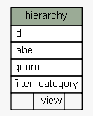
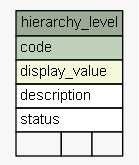
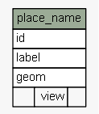
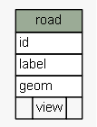
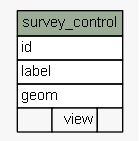
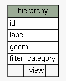
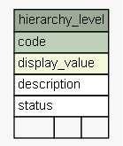
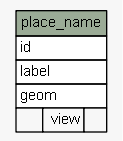
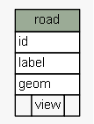
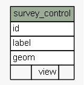

| SchemaSpy Analysis of sola.cadastre - Utility TablesThe SOLA implementation of the LADM Spatial Unit Package. Represents parcels of land and water that can be associated to rights (a.k.a. Cadastre Objects) as well as general spatial or geographic features such as roads, hydro and place names, etc. General spatial features are also known as Spatial Units in SOLA. | Generated by SchemaSpy |
| Generated by SchemaSpy on Tue May 31 09:57 NZST 2016 |
| |||||||||


 








